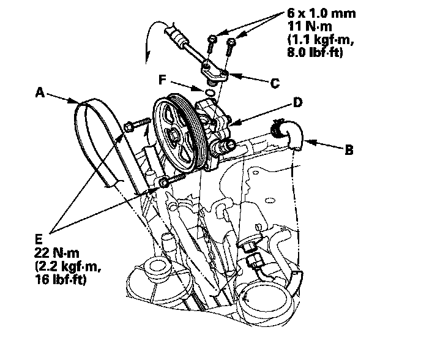

Removal and Replacement
Pump Replacement1. Place a suitable container under the vehicle.
2. Drain the power steering fluid from the reservoir.
3. Remove the engine cover.
4. Remove the drive belt (A) from the pump pulley.

5. Cover the auto-tensioner, alternator, and A/C compressor with several shop towels to protect them from spilled power steering fluid. Disconnect the pump inlet hose (B) and pump outlet hose (C) from the pump (D) and plug them. Take care not to spill the fluid on the body or parts. Wipe off any spilled fluid at once. Do not turn the steering wheel with the pump removed.
6. Remove the pump mounting bolts (E).
7. Cover the opening of the pump with a piece of tape to prevent foreign material from entering the pump.
8. Connect the pump inlet hose and pump outlet hose onto the new pump with a new O-ring (F).
9. Loosely install the pump in the pump bracket with the mounting bolts, then tighten the pump fittings securely.
10. Tighten the pump mounting bolts to the specified torque.
11. Install the drive belt (A).
Note these items during belt installation:
^ Make sure that the belt is properly positioned on the pulleys (B).
^ Do not get power steering fluid or grease on the auto-tensioner, alternator, A/C compressor, and drive belt or pulley faces. Clean off any fluid or grease before installation.
12. Fill the reservoir to the upper level line.